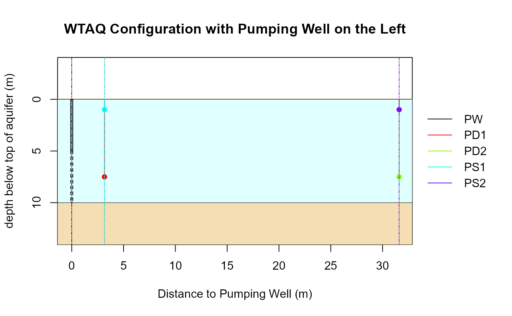

wtConfigurationExample2.RdWTAQ configuration corresponding to sample problem 2 of WTAQ distribution
wtConfigurationExample2()
list with elements general, aquifer, drainage,
times, solution, pumpwell, obswells,
representing a full WTAQ configuration.
# Get configuration of sample problem 2 of WTAQ distribution cnf <- wtConfigurationExample2() # Print formatted output of configuration print(cnf)#> General #> - Title: Sample problem 2, using dimensional format (seconds, meters). #> - Format: DIMENSIONAL #> #> Aquifer #> - Type: WATER TABLE #> - Thickness (bb) ............: 10.000000 (length) #> - Horiz. hydr. conduct. (hkr): 0.000100 (length/time) #> - Vert. hydr. conduct. (hkz): 0.000050 (length/time) #> - Specific storage (ss) .....: 0.000020 (1/length) #> - Specific yield (sy) .......: 0.200000 #> #> Drainage #> - Type: Instantaneous drainage (idra = 0) #> #> Times #> - Type: User-specified times (its = 1) #> #> Solution #> - Type: Stehfest algorithm (isoln = 1) #> - Rel. err. for Newton-Raphson iter. (rerrnr) ...................: 0.000000 #> - Rel. err. for finite summations (rerrsum) .....................: 0.000000 #> - Max. # terms permit. in finite summations (nmax) ..............: 0 #> - Factor to determ. # terms in finite summations (ntms) .........: 30 #> - # of terms used in the Stehfest algorith (ns) .................: 8 #> #> Pumped Well ("PW") #> - Type: Partially penetrating pumped well (ipws = 0) #> - Type of diameter: Finite diameter (ipwd = 1) #> - Pumping rate (qq) .......................................: 0.002000 (length^3/time) #> - Radius of screen (rw) ...................................: 0.100000 (length) #> - Inside radius where levels change during pumping (rc) ...: 0.100000 (length) #> - Top of aquifer/initial water table to screen top (zpd) ..: 5.000000 (length) #> - Top of aquifer/initial water table to screen bottom (zpl): 10.000000 (length) #> - Well-bore skin parameter (sw) ...........................: 0.000000 #> - Predefined Times (t)/drawdown measurements (dd): #> t dd #> 1 9.28e+00 0.51 #> 2 2.00e+01 0.97 #> 3 4.31e+01 1.64 #> 4 9.28e+01 2.31 #> 5 2.00e+02 2.65 #> 6 4.31e+02 2.71 #> 7 9.28e+02 2.71 #> 8 2.00e+03 2.72 #> 9 4.31e+03 2.74 #> 10 9.28e+03 2.76 #> 11 2.00e+04 2.81 #> 12 4.31e+04 2.89 #> 13 9.28e+04 2.98 #> 14 2.00e+05 3.09 #> #> Observation Well "PD1" #> - Type: Observation piezometer (iows = 2) #> - Delayed response: no (idpr = 0) #> - Radial dist. from axis of pumped well to obs. well (r) .....: 3.160000 (length) #> - Top of aquifer/initial water table to piezometer center (zp): 7.500000 (length) #> - Inside radius of standpipe where levels change (rp) ........: 0.000000 (length) #> - Length of screened interval (xll) ..........................: 0.000000 (length) #> - Predefined Times (t)/drawdown measurements (dd): #> t dd #> 1 9.28e+00 0.090 #> 2 2.00e+01 0.204 #> 3 4.31e+01 0.384 #> 4 9.28e+01 0.568 #> 5 2.00e+02 0.662 #> 6 4.31e+02 0.680 #> 7 9.28e+02 0.683 #> 8 2.00e+03 0.690 #> 9 4.31e+03 0.703 #> 10 9.28e+03 0.729 #> 11 2.00e+04 0.775 #> 12 4.31e+04 0.847 #> 13 9.28e+04 0.942 #> 14 2.00e+05 1.052 #> #> Observation Well "PD2" #> - Type: Observation piezometer (iows = 2) #> - Delayed response: no (idpr = 0) #> - Radial dist. from axis of pumped well to obs. well (r) .....: 31.600000 (length) #> - Top of aquifer/initial water table to piezometer center (zp): 7.500000 (length) #> - Inside radius of standpipe where levels change (rp) ........: 0.000000 (length) #> - Length of screened interval (xll) ..........................: 0.000000 (length) #> - Predefined Times (t)/drawdown measurements (dd): #> t dd #> 1 9.28e+00 0.0000 #> 2 2.00e+01 0.0005 #> 3 4.31e+01 0.0028 #> 4 9.28e+01 0.0071 #> 5 2.00e+02 0.0099 #> 6 4.31e+02 0.0105 #> 7 9.28e+02 0.0110 #> 8 2.00e+03 0.0119 #> 9 4.31e+03 0.0140 #> 10 9.28e+03 0.0186 #> 11 2.00e+04 0.0292 #> 12 4.31e+04 0.0524 #> 13 9.28e+04 0.0983 #> 14 2.00e+05 0.1722 #> #> Observation Well "PS1" #> - Type: Observation piezometer (iows = 2) #> - Delayed response: no (idpr = 0) #> - Radial dist. from axis of pumped well to obs. well (r) .....: 3.160000 (length) #> - Top of aquifer/initial water table to piezometer center (zp): 1.000000 (length) #> - Inside radius of standpipe where levels change (rp) ........: 0.000000 (length) #> - Length of screened interval (xll) ..........................: 0.000000 (length) #> - Predefined Times (t)/drawdown measurements (dd): #> t dd #> 1 9.28e+00 0.007 #> 2 2.00e+01 0.019 #> 3 4.31e+01 0.039 #> 4 9.28e+01 0.060 #> 5 2.00e+02 0.072 #> 6 4.31e+02 0.077 #> 7 9.28e+02 0.084 #> 8 2.00e+03 0.098 #> 9 4.31e+03 0.126 #> 10 9.28e+03 0.177 #> 11 2.00e+04 0.258 #> 12 4.31e+04 0.365 #> 13 9.28e+04 0.487 #> 14 2.00e+05 0.612 #> #> Observation Well "PS2" #> - Type: Observation piezometer (iows = 2) #> - Delayed response: no (idpr = 0) #> - Radial dist. from axis of pumped well to obs. well (r) .....: 31.600000 (length) #> - Top of aquifer/initial water table to piezometer center (zp): 1.000000 (length) #> - Inside radius of standpipe where levels change (rp) ........: 0.000000 (length) #> - Length of screened interval (xll) ..........................: 0.000000 (length) #> - Predefined Times (t)/drawdown measurements (dd): #> t dd #> 1 9.28e+00 0.0000 #> 2 2.00e+01 0.0001 #> 3 4.31e+01 0.0005 #> 4 9.28e+01 0.0012 #> 5 2.00e+02 0.0017 #> 6 4.31e+02 0.0019 #> 7 9.28e+02 0.0022 #> 8 2.00e+03 0.0028 #> 9 4.31e+03 0.0042 #> 10 9.28e+03 0.0075 #> 11 2.00e+04 0.0160 #> 12 4.31e+04 0.0380 #> 13 9.28e+04 0.0840 #> 14 2.00e+05 0.1620